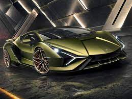

La primera versión que se presenta es el LP 610-4 Coupé. Desde Italia confirmaron que las entregas de este automóvil comenzaron durante la primavera de 2014, mientras que su presentación oficial al público se llevó a cabo en la 84.ª edición del Salón del Automóvil de Ginebra en marzo de ese mismo año.
Además de su presentación oficial en Ginebra, Lamborghini inició desde el mes de enero una serie de presentaciones privadas de este modelo en 60 ciudades de todo el mundo. Se trata de un coche que, según la marca transalpina, establece un nuevo estándar de deportividad de lujo en el segmento, afirmando a su vez que ofrecerá a los conductores un estilo dinámico en combinación con un alto nivel tecnológico, un diseño innovador y una gran calidad de acabados.
Presenta tres modos diferentes de conducción. El primero de ellos es el Strada y está pensado para el tráfico abierto, ya que selecciona las marchas de forma totalmente automática y la entrega de la potencia del motor es muy progresiva.
Por encima se sitúa el modo Sport, que mantiene el cambio de marchas en modo automático, pero modifica la respuesta de la suspensión, del acelerador y de la dirección, dando más agresividad al conjunto. Y finamente, está el modo Corsa, donde da rienda suelta a todas sus posibilidades, cambio mediante levas incluido. La marca ha bautizado al conjunto de estos tres programas como "ANIMA".5
Nomenclatura
El nombre del Huracán está inspirado en un toro de lidia español, similar a varios otros nombres de modelos de Lamborghini en relación con el tema de la tauromaquia, el cual era un animal conocido por su coraje y bravura criado en la ganadería del Conde de Patilla de Benavente (Zamora). Se lidió en la Plaza de toros de Alicante el 3 de agosto de 1879.
Inicialmente se iba a llamar "Cabrera", que era el nombre de una ganadería histórica de toros sevillanos y que, en cualquier caso, el Cabrera podría acabar llamándose de cualquier otra forma al pasar a producción. Ese nombre provisional sonaba a cualquier cosa, menos a superdeportivo. Posteriormente, acabó por denominarse como Huracán.6
Características
Motor
Mantiene el mismo motor V10 naturalmente aspirado de 5204 cm³ (5,2 L; 317,6 plg³) heredado del Gallardo, con un diámetro x carrera de 84,5 x 92,8 mm (3,33 x 3,65 plg), distribución de doble (DOHC) árbol de levas por cada bancada de cilindros y 4 válvulas por cilindro (40 en total), distribución de válvulas variable (VVT), lubricación por cárter seco y una relación de compresión de 12,7:1, que desarrolla una potencia máxima de 610 CV (602 HP; 449 kW) y 560 N·m (413 lb·pie) de par máximo,7 compartido también con el Audi R8 4S.
Para garantizar el equilibrio y el rendimiento, la disposición es de motor central-trasero como se acostumbra desde hace tiempo en la firma. Tiene tanto inyección directa como inyección multipunto de combustible, combinando los beneficios de ambos sistemas y siendo la primera vez que se utiliza esta combinación en un V10.
Rendimiento
Su plataforma combina la tecnología de fibra de carbono con elementos de aluminio, lo que deja el peso total en 1422 kg (3135 libras),5 con una relación peso a potencia de 2,33 kg/CV. Un Ferrari 458 Italia pesa 1380 kg (3042 libras), mientras que el Huracán tiene dos cilindros más y cuenta con tracción integral.8 Por su parte, el McLaren MP4-12C pesa 1350 kg (2976 libras), teniendo un chasis completamente fabricado en fibra de carbono y un motor más pequeño, contando solamente con tracción trasera.
Su velocidad máxima es de 325 km/h (202 mph) estimada por el propio fabricante, pero probablemente bajo ciertas condiciones sobrepase esa cifra. Acelera de 0 a 100 km/h (62 mph) en 3,2 segundos y de 0 a 200 km/h (124 mph) en 9,9 segundos.7
Se controlan electrónicamente todas las ruedas motrices, que tiene como objetivo aumentar la tracción en diversas superficies y el rendimiento general del coche.
Aceleración en prueba de carretera
0 a 60 mph (97 km/h): 3,6 segundos.9
0 a 300 km/h (186 mph): 37,6 segundos.
1/4 de milla (402 m): 11,7 segundos @ 124,9 mph (201 km/h).